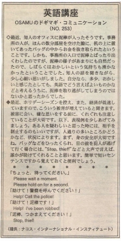

助けて！ 警察を呼んでください。
最近、知人のオフィスに泥棒が入ったそうです。事務所の人が、ほんの数分部屋を空けた隙に、机の上に置いてあったバッグの中からお金を抜き取られたということです。しかも、事務所の入口で泥棒とばったり出くわしたのですが、泥棒の様子があまりにも自然だったので、しばらくはおかしいという気持ちも湧かなかったということでした。知人の話を聞きながら、少し心細い思いがしました。自分なら、多少、おかしいと感じたとしても、英語でどう言えばよいものかなどと考えるうちに、泥棒を取り逃がしてしまうのではないかと思ったからでした。
最近、ホリデーシーズンを控え、また、経済が低迷していますので、こういう被害が増えていると聞きます。被害に会い、嫌な思いをする前に、くれぐれも注意していることが大切です。以下、表現例を少しあげてみましょう。ある人を疑わしいと思った時には、相手を制止するのもいいのですが、人通りの多いところかどうかなど、状況によります。まず、身の安全が大切ですね。バッグなどをひったくられ、目の前を犯人が逃げて行く場合には、"Stop, thief!"などと大声で言えば、誰かが助けてくれることと思います。簡単で短いセンテンスですから覚えておくと便利でしょう。
ちょっと、待ってください。
Please wait a moment.
Please hold on for a second.
助けて！ 警察を呼んでください！
Help! Call the police!
助けて！ 泥棒です！
Help! I've been robbed!
泥棒、つかまえてください。
Stopm thief!

| © 1995-2013 NACOS International Institute. All Rights Reserved. |